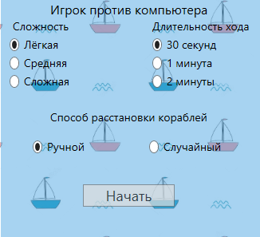

Программная система совместима с Windows 7/8 и выше. Системные требования: 115 Mb оперативной памяти, 200 Mb жесткого диска.
Игровое поле представляет собой квадрат 10×10 для каждого игрок, на котором размещается флот кораблей. Размещаются:
При размещении корабли не могут касаться друг друга сторонами и углами.
Игрок, выполняющий ход, совершает выстрел – выбирает клетку, в которой, по его мнению, находится корабль противника.
Если выстрел пришелся в клетку, не занятую ни одним кораблем противника, то игроку засчитывается промах, и ход переходит к противнику.
Если выстрел пришелся в клетку, где находится многопалубный корабль, то игроку засчитывается попадание. Право хода остается у игрока.
Если выстрел пришелся в клетку, где находится однопалубный корабль, или в последнюю непораженную клетку многопалубного корабля, то игроку засчитывается убийство корабля. В этом случае все клетки с водой, окружающие потопленный корабль, отмечаются попаданием в них. Право хода остается у игрока.
Побеждает игрок, первым уничтожившим все корабли противника.
На протяжении всего взаимодействия с системой Вас сопровождает верхнее меню системы:
кнопка управления звуковым сопровождением системы.
кнопка выпадающего меню, при нажатии на которую становятся доступны к просмотру сведения по справочной информации о системе по кнопке «Правила» и сведений о разработчиках по кнопке «О системе»:
Для входа в игру необходимо ввести логин и войти в систему по кнопке «Войти».
После авторизации перед Вами откроются на выбор два режима запуска игры: синий – режим игры с компьютером, красный – режим игры с противником онлайн.
По нажатию на кнопку «Новая игра» Вам откроются настройки игрового режима

Вам доступен выбор одного из трех уровней сложности, а также выбор времени хода и один из двух способов расстановки кораблей на игровом поле (выбор делается радио кнопками). Подтвердите свой выбор кнопкной «Начать» для перехода к игровому процессу.
Вы можете перейти к выбору ранее сохраненной игры нажав на кнопку «Загрузить игру». Перед вами откроется список сохраненных игр с возможностью продолжения, выбранной Вами, либо возврата к выбору режима игры по кнопке «Назад».
Для создания игровой сессии Вам необходимо нажать на кнопку «Создать и пригласить» и настроить игру, пользуясь параметрами, представленными на всплывающем окне настроек режима.
Для подключения игровой сессии нажмите «Присоединиться» и выберите настройки игры.
Длительность хода означает время, в течение которого Вы можете совершить ход. При успешном попадании по кораблю противника время хода не обнуляется.
Способ расстановки выбирается в соответствии с методом. При выборе ручной расстановки Вы сможете самостоятельно расставить корабли на поле или загрузить из заранее сохраненных вариантов. Случайный способ расстановки означает, что корабли на поле будут расставлены случайным, заранее неизвестным способом.
Внизу экрана настроек расположено поле с паролем игровой сессии. Этот пароль является уникальным адресом, благодаря которому второй игрок сможет подключиться к созданной Вами игре. Прежде чем нажимать «Далее», сообщите этот ключ второму игроку.
Вернуться к выбору режима игры Вы можете нажав «Назад».
Когда все параметры будут выбраны, нажмите «Далее» и ожидайте подключения второго игрока для начала игрового процесса.
При подключении к игровой сессии Вы не можете регулировать все параметры игры. Тем не менее, Вы можете выбрать способ расстановки кораблей на поле боя. Для подключения к сессии Вы должны ввести пароль, заранее сообщенный Вам вторым игроком, в поле, расположенное вверху окна.
Ручная расстановка кораблей осуществляется с учетом правил, описанных в правилах игры. Для установки корабля на поле необходимо перетащить его из набора кораблей, расположенного справа от поля. Для изменения ориентации корабля нажмите правую кнопку мыши, удерживая его. Для возврата корабля в набор перетащите его за границы поля. «Случайная расстановка» не реализована до дальнейшего обновления.
Нажмите «Вперед» для перехода к ведению боя с противником.
После ручной расстановки кораблей Вы можете сохранить ее для дальнейшего использования. Для этого после расстановки кораблей нажмите кнопку «Сохранить расстановку». Откроется окно, где нужно будет ввести имя сохраненной расстановки.
Нажав «Отмена» Вы вернетесь обратно к расстановке кораблей.
Используя ручную расстановку кораблей так же можно загрузить уже сохраненную ранее расстановку. Для этого нужно нажать на кнопку «Загрузить расстановку». Откроется окно, где нужно будет выбрать сохраненную расстановку из списка.
Нажав «Назад» Вы вернетесь к расстановке кораблей.
Право первого хода принадлежит создателю игры. О праве на совершения хода Вас уведомляет строка вверху:
Ваш первый ход окрашивает строку в фиолетовый цвет и продолжает принадлежать цвету Вашего хода: Во время хода противника цвет строки темно-синий:По клику на клетке поля противника, расположенного справа, будет совершен ход. Игроки совершают ходы по очереди, согласно описанным ранее правилам.
Поражена часть корабля/весь корабль противника.
Промах, попадание по воде.
Таймер хода.
Нажмите «Сохранить игру» для сохранения текущего процесса игры и продолжения в дальнейшем с помощью загрузки сохранения.
После нажатия «Сохранить игру» введите имя сохранения и нажмите «Сохранить». Для отмены решения сохранять игру и возврата к продолжению игры нажмите «Не сохранять». Функция доступна и корректно работает для игры с компьютером.
Для того что бы завершить игру нажмите «Завершить». Во всплывающем диалоговом окне Вам будет предлежено сохранение игры. Для отказа нажмите «Нет», для отмены завершения игры – «Отмена». После успешного завершения Вы перейдете на страницу выбора режима игры.
^Наверх